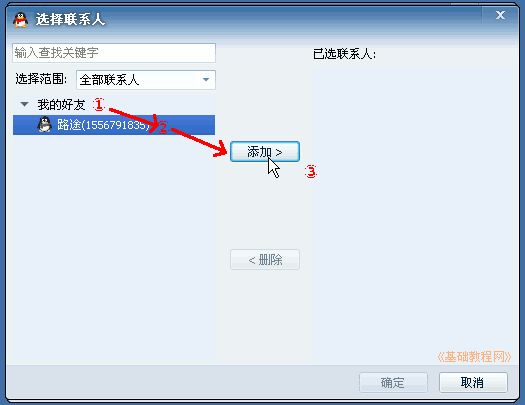
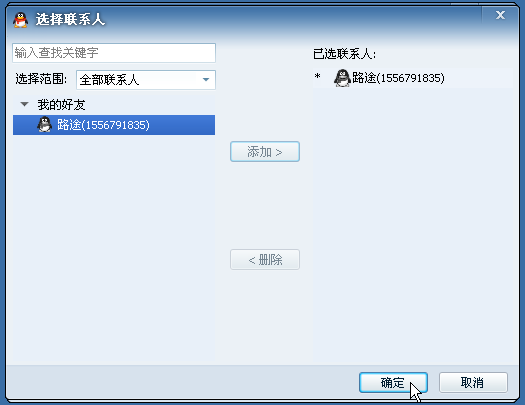
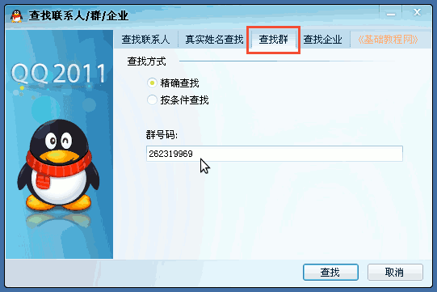
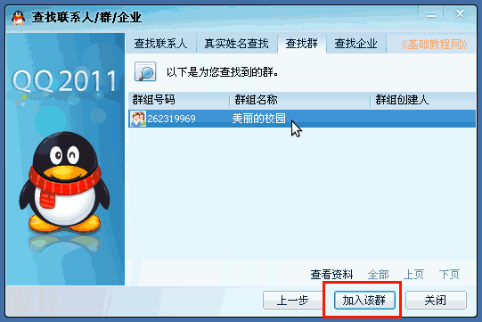
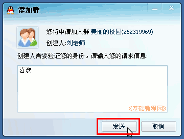

QQ群使用操作教程
作者：TeliuTe 来源：基础教程网
二、添加群成员 返回目录 下一课群建好以后，就可以往群里添加成员；
1、添加成员
1）登录QQ，点击上边的群标签，在里面找到自己建立的群(或者自己是管理员的群)，双击打开它；
2）在出来的群聊天窗口中，找到上边工具栏右侧的群设置按钮，一个齿轮图标，点击选择“成员管理”菜单；
3）在出来的成员管理面板下边，点击“添加成员”按钮；
4）在出来的选择联系人面板左边，点击展开自己的好友分组，然后选择一个好友，再点中间的“添加”按钮；

5）同样添加其他好友，然后在右侧面板检查一下添加的成员，然后点下边的“确定”按钮；

6）回到群成员面板，点“确定”完成，将会给这些好友发出邀请，好友同意后就会加到群里来；
2、查找群申请加入
1）其他人也可以通过查找群来申请加入，点击QQ主面板下边的放大镜图标，查找按钮；
2）在出来的查找联系人面板上边，选择“查找群”，在中间输入群号码；

3）点“查找”按钮后，在面板中间显示找到的群，点击选中再点下边的“加入该群”按钮；

4）出来一个验证对话框，输入一句加入的理由，然后点“发送”按钮；

5）然后出来提示，等待群管理员批准，就可以加入到群里了；
本节学习了添加群成员和查找群的基础知识，如果你成功地完成了练习，请继续学习下一课内容；
本教程由86团学校TeliuTe制作|著作权所有
基础教程网：http://teliute.org/
美丽的校园……
转载和引用本站内容，请保留版权信息和本站链接。